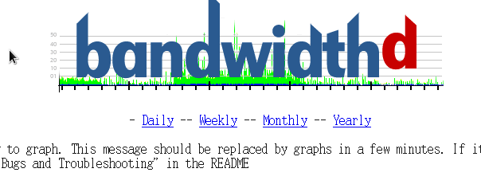

Bandwidthd
Bandwidthd是一款免费的流量监控软件，它可以用图标的方式展现出网络流量行为，并且可区分出ftp、tcp等各种协议的流量。
1、安装一些依赖软件
|
[root@localhost
bandwidthd-2.0.1]# yum install -y libpng libpng-devel gd gd-devel gcc libpcap-devel
|
2、下载bandwidthd软件（https://sourceforge.net/projects/bandwidthd/files/bandwidthd/bandwidthd
2.0.1/）
3、解压bandwidthd。
|
[root@localhost ~]#
tar -xzvf bandwidthd-2.0.1.tar.gz
|
4、安装。Bandwidthd需要进行编译安装，首先要执行configure文件，生成makefile，然后在编译、安装
|
[root@localhost
bandwidthd-2.0.1]# ./configure
[root@localhost
bandwidthd-2.0.1]# make
[root@localhost
bandwidthd-2.0.1]# make install
|
5、修改配置文件“/usr/local/bandwidthd/etc/bandwidthd.conf”，设置监听的网段和网卡
|
[root@localhost
bandwidthd-2.0.1]# gedit /usr/local/bandwidthd/etc/bandwidthd.conf
#subnet
10.0.0.0 255.0.0.0
#subnet
192.168.0.0/16
#subnet
172.16.0.0/12
subnet
192.168.0.0/24 //监听网段
# Device to
listen on
# Bandwidthd
listens on the first device it detects
# by
default. Run "bandwidthd -l" for a list of
# devices.
dev
"eth0" //监听网卡
|
6、建立链接，在apache网页根目录建立一个链接，指向bandwidthd，这样可以快速打开bandwidthd
|
[root@localhost
bandwidthd-2.0.1]# cd /var/www/html/
[root@localhost
html]# ln -s /usr/local/bandwidthd/htdocs bandwidthd
|
7、启动bandwidthd
|
[root@localhost
html]# cd /usr/local/bandwidthd/
[root@localhost
bandwidthd]# ./bandwidthd
|
8、在浏览器输入“127.0.0.1/bandwidthd”打开bandwidthd。请确保你已经开启了httpd服务。

9、设置bandwidthd开机启动
|
[root@localhost
html]# gedit /etc/rc.local
touch
/var/lock/subsys/local
INITTY=/dev/tty[1-8]
for tty in
$INITTY; do
setleds
-D +num < $tty
done
/usr/local/bandwidthd/bandwidthd
|
Copyright@david
zhytwj2018@163.com